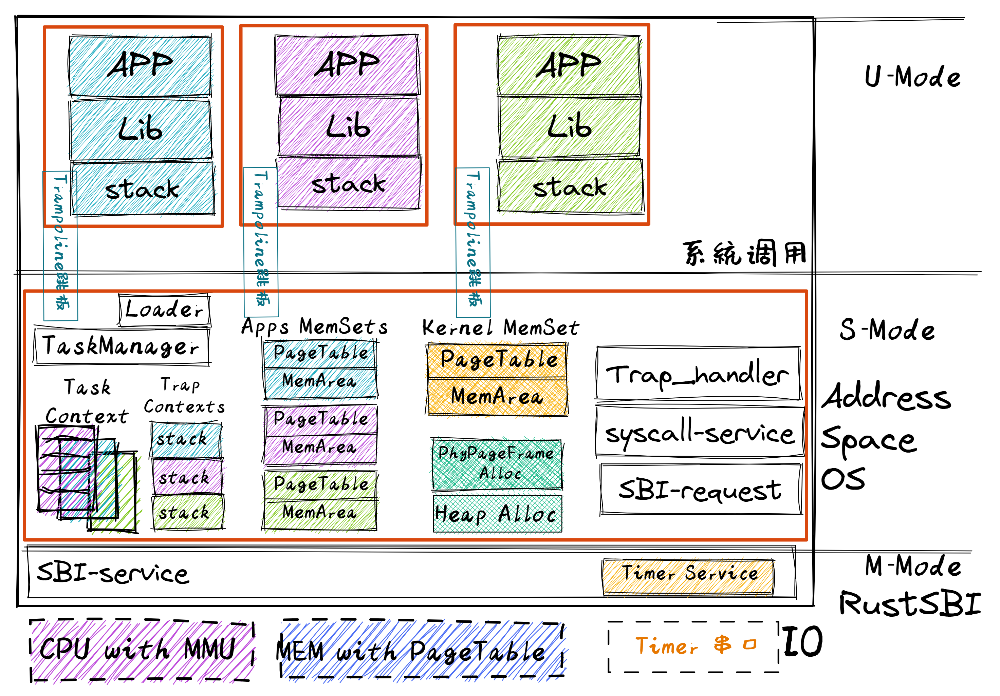

引言#
本章导读#
物理内存是操作系统需要管理的一个重要资源，让运行在一台机器上的多个应用程序不用“争抢”，都能随时得到想要的任意多的内存，是操作系统的想要达到的理想目标。提高系统物理内存的动态使用效率，通过隔离应用的物理内存空间保证应用间的安全性，把“有限”物理内存变成“无限”虚拟内存，是操作系统的一系列重要的目标，本章展现了操作系统为实现“理想”而要扩展的一系列功能：
通过动态内存分配，提高了应用程序对内存的动态使用效率
通过页表的虚实内存映射机制，简化了编译器对应用的地址空间设置
通过页表的虚实内存映射机制，加强了应用之间，应用与内核之间的内存隔离，增强了系统安全
通过页表的虚实内存映射机制，可以实现空分复用（提出，但没有实现）
本章将进一步设计与实现具有上述大部分功能的侏罗纪“头甲龙” 1 操作系统，让应用开发更加简单，应用程序更加通用，且让应用和操作系统都有强大的地址空间隔离的安全保护。
上一章，我们分别实现了多道程序和分时多任务系统，它们的核心机制都是任务切换。由于多道程序和分时多任务系统的设计初衷不同，它们在任务切换的时机和策略也不同。有趣的一点是，任务切换机制对于应用是完全 透明 (Transparent) 的，应用可以不对内核实现该机制的策略做任何假定（除非要进行某些针对性优化），甚至可以完全不知道这机制的存在。
在大多数应用（也就是应用开发者）的视角中，它们会独占一整个 CPU 和特定（连续或不连续）的内存空间。当然，通过上一章的学习，我们知道在现代操作系统中，出于公平性的考虑，我们极少会让独占 CPU 这种情况发生。所以应用自认为的独占 CPU 只是内核想让应用看到的一种 幻象 (Illusion) ，而 CPU 计算资源被 时分复用 (TDM, Time-Division Multiplexing) 的实质被内核通过恰当的抽象隐藏了起来，对应用不可见。
与之相对，我们目前还没有对内存管理功能进行进一步拓展，仅仅是把程序放到某处的物理内存中。在内存访问方面，所有的应用都直接通过物理地址访问物理内存，这使得应用开发者需要了解繁琐的物理地址空间布局，访问内存也很不方便。在上一章中，出于任务切换的需要，所有的应用都在初始化阶段被加载到内存中并同时驻留下去直到它们全部运行结束。而且，所有的应用都直接通过物理地址访问物理内存。这会带来以下问题：
首先，内核提供给应用的内存访问接口不够透明，也不好用。由于应用直接访问物理内存，这需要它在构建的时候就清楚所运行计算机的物理内存空间布局，还需规划自己需要被加载到哪个地址运行。为了避免冲突可能还需要应用的开发者们对此进行协商，这显然是一件在今天看来不够通用且极端麻烦的事情。
其次，内核并没有对应用的访存行为进行任何保护措施，每个应用都有计算机系统中整个物理内存的读写权力。即使应用被限制在 U 特权级下运行，它还是能够造成很多麻烦：比如它可以读写其他应用的数据来窃取信息或者破坏其它应用的正常运行；甚至它还可以修改内核的代码段来替换掉原本的
trap_handler函数，来挟持内核执行恶意代码。总之，这造成系统既不安全、也不稳定。再次，目前应用的内存使用空间在其运行前已经限定死了，内核不能灵活地给应用程序提供的运行时动态可用内存空间。比如一个应用结束后，这个应用所占的空间就被释放了，但这块空间无法动态地给其它还在运行的应用使用。
因此，为了简化应用开发，防止应用胡作非为，本章将更好地管理物理内存，并提供给应用一个抽象出来的更加透明易用、也更加安全的访存接口，这就是基于分页机制的虚拟内存。站在应用程序运行的角度看，就是存在一个从“0”地址开始的非常大的可读/可写/可执行的地址空间（Address Space），而站在操作系统的角度看，每个应用被局限在分配给它的物理内存空间中运行，无法读写其它应用和操作系统所在的内存空间。
实现地址空间的第一步就是实现分页机制，建立好虚拟内存和物理内存的页映射关系。此过程需要硬件支持，硬件细节与具体CPU相关，涉及地址映射机制等，相对比较复杂。总体而言，我们需要思考如下问题：
硬件中物理内存的范围是什么？
哪些物理内存空间需要建立页映射关系？
如何建立页表使能分页机制？
如何确保 OS 能够在分页机制使能前后的不同时间段中都能正常寻址和执行代码？
页目录表（一级）的起始地址设置在哪里？
二级/三级等页表的起始地址设置在哪里，需要多大空间？
如何设置页目录表项/页表项的内容？
如果要让每个任务有自己的地址空间，那每个任务是否要有自己的页表？
代表应用程序的任务和操作系统需要有各自的页表吗？
在有了页表之后，任务和操作系统之间应该如何传递数据？
如果能解决上述问题，我们就能设计实现具有超强防护能力的侏罗纪“头甲龙”操作系统。并可更好地理解地址空间，虚拟地址等操作系统的抽象概念与操作系统的虚存具体实现之间的联系。
注解
提供巨大虚拟内存空间的 Atlas Supervisor 操作系统
两级存储系统在 1940 年就已经存在。1950-1960 年期间，计算机的主存（今天称为 RAM）通常是容量小的磁芯，而辅助存储器通常是容量大的磁鼓。处理器只能对主存寻址来读写数据或执行代码。1960 年前后，位于计算机内存中的应用程序数量和单个程序的体积都在迅速增加，物理内存的容量跟不上应用对内存的需求。应用程序员的一个主要工作是在程序中编写在主存和辅助存储之间移动数据的代码，来扩大应用程序访问的数据量。计算机专家开始考虑能否让计算机自动地移动数据来减轻程序员的编程负担？
虚拟内存（Virtual memory）技术概念首次由德国的柏林工业大学（Technische Universität Berlin）博士生 Fritz-Rudolf Güntsch 提出。在他的博士论文中设想了一台计算机，其内存地址空间大小为 \(10^5\) 个字，可精确映射到作为二级存储的磁鼓（大小也为 \(10^5\) 个字）上，应用程序读写的数据的实际位置由硬件和监控器（即操作系统）来管理和控制，并在物理主存（RAM）和辅存（二级存储）之间按需搬移数据。即主存中只放置应用程序最近访问的数据，而应用程序最近不访问的数据会搬移到辅存中，在应用程序需要时再搬回内存中。这个搬移过程对应用程序是透明的。
虚拟内存的设想在 1959 年变成了现实。英国曼彻斯特大学的 Tom Kilburn 教授领导的团队于 1959 年展示了他们设计的 Atlas 计算机和 Atlas Supervisor 操作系统，开创了在今天仍然普遍使用的操作系统技术：分页（paging）技术和虚拟内存（virtual memory，当时称为 one-level storage system）。他们的核心思想中的根本性创新是区分了“地址（address）”和“内存位置（memory location）”，并因此创造了三项发明：
地址转换：硬件自动将处理器生成的每个地址转换为其当前内存位置。
按需分页（demand paging）：由硬件地址转换触发缺页中断后，由操作系统将缺失的数据页移动到主存储器中，并形成正确的地址转换映射。
页面置换算法：检查最无用（least useful）的页，并将其移回二级存储中，这样可以让经常访问的数据驻留在主存中。
计算机科学家对 Atlas Supervisor 操作系统给予高度的评价。Brinch Hansen 认为它是操作系统史上最重大的突破。Simon Lavington 认为它是第一个可识别的现代操作系统。
实践体验#
本章的应用和上一章相同，只不过由于内核提供给应用的访存接口被替换，应用的构建方式发生了变化，这方面在下面会深入介绍。 因此应用运行起来的效果与上一章是一致的。
获取本章代码：
$ git clone https://github.com/rcore-os/rCore-Tutorial-v3.git
$ cd rCore-Tutorial-v3
$ git checkout ch4
在 qemu 模拟器上运行本章代码：
$ cd os
$ make run
如果顺利的话，我们将看到和上一章相同的运行结果（以 K210 平台为例）：
[RustSBI output]
[kernel] back to world!
remap_test passed!
init TASK_MANAGER
num_app = 4
power_3 [10000/300000power_5 [10000/210000]
power_5 [20000/210000]
power_5 [30000/210000]
...
(mod 998244353)
Test power_7 OK!
[kernel] Application exited with code 0
power_3 [290000/300000]
power_3 [300000/300000]
3^300000 = 612461288(mod 998244353)
Test power_3 OK!
[kernel] Application exited with code 0
Test sleep OK!
[kernel] Application exited with code 0
[kernel] Panicked at src/task/mod.rs:112 All applications completed!
[rustsbi] reset triggered! todo: shutdown all harts on k210; program halt. Type: 0, reason: 0
本章代码树#
头甲龙操作系统 - Address Space OS的总体结构如下图所示：
{kind=link}
通过上图，大致可以看出头甲龙操作系统 - Address Space OS为了提高操作系统和应用程序执行的安全性，增强了内存管理能力，提供了地址空间隔离机制，给APP的内存地址空间划界，不能越界访问OS和其他APP。在具体实现上，扩展了 TaskManager 的管理范围，每个 Task 的上下文 Task Context 还包括该任务的地址空间，在切换任务时，也要切换任务的地址空间。新增的内存管理模块主要包括与内核中动态内存分配相关的页帧分配、堆分配，以及表示应用地址空间的 Apps MemSets 类型和内核自身地址空间的 Kernel MemSet`类型。 `MemSet 类型所包含的页表 PageTable 建立了虚实地址映射关系，而另外一个 MemArea 表示任务的合法空间范围。
位于 ch4 分支上的头甲龙操作系统 - Address Space OS的源代码如下所示：
1./os/src
2Rust 25 Files 1415 Lines
3Assembly 3 Files 88 Lines
4
5├── bootloader
6│ ├── rustsbi-k210.bin
7│ └── rustsbi-qemu.bin
8├── LICENSE
9├── os
10│ ├── build.rs
11│ ├── Cargo.lock
12│ ├── Cargo.toml
13│ ├── Makefile
14│ └── src
15│ ├── config.rs(修改：新增一些内存管理的相关配置)
16│ ├── console.rs
17│ ├── entry.asm
18│ ├── lang_items.rs
19│ ├── link_app.S
20│ ├── linker-k210.ld(修改：将跳板页引入内存布局)
21│ ├── linker-qemu.ld(修改：将跳板页引入内存布局)
22│ ├── loader.rs(修改：仅保留获取应用数量和数据的功能)
23│ ├── main.rs(修改)
24│ ├── mm(新增：内存管理的 mm 子模块)
25│ │ ├── address.rs(物理/虚拟 地址/页号的 Rust 抽象)
26│ │ ├── frame_allocator.rs(物理页帧分配器)
27│ │ ├── heap_allocator.rs(内核动态内存分配器)
28│ │ ├── memory_set.rs(引入地址空间 MemorySet 及逻辑段 MemoryArea 等)
29│ │ ├── mod.rs(定义了 mm 模块初始化方法 init)
30│ │ └── page_table.rs(多级页表抽象 PageTable 以及其他内容)
31│ ├── sbi.rs
32│ ├── sync
33│ │ ├── mod.rs
34│ │ └── up.rs
35│ ├── syscall
36│ │ ├── fs.rs(修改：基于地址空间的 sys_write 实现)
37│ │ ├── mod.rs
38│ │ └── process.rs
39│ ├── task
40│ │ ├── context.rs(修改：构造一个跳转到不同位置的初始任务上下文)
41│ │ ├── mod.rs(修改，详见文档)
42│ │ ├── switch.rs
43│ │ ├── switch.S
44│ │ └── task.rs(修改，详见文档)
45│ ├── timer.rs
46│ └── trap
47│ ├── context.rs(修改：在 Trap 上下文中加入了更多内容)
48│ ├── mod.rs(修改：基于地址空间修改了 Trap 机制，详见文档)
49│ └── trap.S(修改：基于地址空间修改了 Trap 上下文保存与恢复汇编代码)
50├── README.md
51├── rust-toolchain
52├── tools
53│ ├── kflash.py
54│ ├── LICENSE
55│ ├── package.json
56│ ├── README.rst
57│ └── setup.py
58└── user
59 ├── build.py(移除)
60 ├── Cargo.toml
61 ├── Makefile
62 └── src
63 ├── bin
64 │ ├── 00power_3.rs
65 │ ├── 01power_5.rs
66 │ ├── 02power_7.rs
67 │ └── 03sleep.rs
68 ├── console.rs
69 ├── lang_items.rs
70 ├── lib.rs
71 ├── linker.ld(修改：将所有应用放在各自地址空间中固定的位置)
72 └── syscall.rs
本章代码导读#
本章涉及的代码量相对多了起来，也许同学们不知如何从哪里看起或从哪里开始尝试实验。这里简要介绍一下“头甲龙”操作系统的大致开发过程。
我们先从简单的地方入手，那当然就是先改进应用程序了。具体而言，主要就是把 linker.ld 中应用程序的起始地址都改为 0x10000 ，这是假定我们操作系统能够通过分页机制把不同应用的相同虚地址映射到不同的物理地址中。这样我们写应用就不用考虑应用的物理地址布局的问题，能够以一种更加统一的方式编写应用程序，可以忽略掉一些不必要的细节。
为了能够在内核中动态分配内存，我们的第二步需要在内核增加连续内存分配的功能，具体实现主要集中在 os/src/mm/heap_allocator.rs 中。完成这一步后，我们就可以在内核中用到Rust的堆数据结构了，如 Vec 、 Box 等，这样内核编程就更加灵活了。
操作系统如果要建立页表（构建虚实地址映射关系），首先要能管理整个系统的物理内存，这就需要知道整个计算机系统的物理内存空间的范围，物理内存中哪些区域是空闲可用的，哪些区域放置内核/应用的代码和数据。操作系统内核能够以物理页帧为单位分配和回收物理内存，具体实现主要集中在 os/src/mm/frame_allocator.rs 中；也能在虚拟内存中以各种粒度大小来动态分配内存资源，具体实现主要集中在 os/src/mm/heap_allocator.rs 中。
页表中的页表项的索引其实是虚拟地址中的虚拟页号，页表项的重要内容是物理地址的物理页帧号。为了能够灵活地在虚拟地址、物理地址、虚拟页号、物理页号之间进行各种转换，在 os/src/mm/address.rs 中实现了各种转换函数。
完成上述工作后，基本上就做好了建立页表的前期准备。我们就可以开始建立页表，这主要涉及到页表项的数据结构表示，以及多级页表的起始物理页帧位置和整个所占用的物理页帧的记录。具体实现主要集中在 os/src/mm/page_table.rs 中。
一旦使能分页机制，CPU 访问到的地址都是虚拟地址了，那么内核中也将基于虚地址进行虚存访问。所以在给应用添加虚拟地址空间前，内核自己也会建立一个页表，把整块物理内存通过简单的恒等映射（即虚拟地址映射到对等的物理地址）映射到内核虚拟地址空间中。后续的应用在执行前，也需要操作系统帮助它建立一个虚拟地址空间。这意味着第三章的初级 task 将进化到第四章的拥有独立页表的 task 。虚拟地址空间需要有一个数据结构管理起来，这就是 MemorySet ，即地址空间这个抽象概念所对应的具象体现。在一个虚拟地址空间中，有代码段，数据段等不同属性且不一定连续的子空间，它们通过一个重要的数据结构 MapArea 来表示和管理。围绕 MemorySet 等一系列的数据结构和相关操作的实现，主要集中在 os/src/mm/memory_set.rs 中。比如内核的页表和虚拟空间的建立在如下代码中：
1// os/src/mm/memory_set.rs
2
3lazy_static! {
4 pub static ref KERNEL_SPACE: Arc<Mutex<MemorySet>> = Arc::new(Mutex::new(
5 MemorySet::new_kernel()
6 ));
7}
完成到这里，我们就可以使能分页机制了。且我们应该有更加方便的机制来给支持应用运行。在本章之前，都是把应用程序的所有元数据丢弃从而转换成二进制格式来执行，这其实把编译器生成的 ELF 执行文件中大量有用的信息给去掉了，比如代码段、数据段的各种属性，程序的入口地址等。既然有了给应用运行提供虚拟地址空间的能力，我们就可以利用 ELF 执行文件中的各种信息来灵活构建应用运行所需要的虚拟地址空间。在 os/src/loader.rs 中可以看到如何获取一个应用的 ELF 执行文件数据，而在 os/src/mm/memory_set 中的 MemorySet::from_elf 可以看到如何通过解析 ELF 来创建一个应用地址空间。
为此，操作系统需要扩展任务控制块 TaskControlBlock 的管理范围，使得操作系统能管理拥有独立页表和单一虚拟地址空间的应用程序的运行。相关主要的改动集中在 os/src/task/task.rs 中。
由于代表应用程序运行的任务和管理应用的操作系统各自有独立的页表和虚拟地址空间，所以在操作系统的设计实现上需要考虑两个挑战。第一个挑战是 页表切换 。由于系统调用、中断或异常导致的应用程序和操作系统之间的上下文切换不像以前那么简单了，因为在这些处理过程中需要切换页表，相关改进可参看 os/src/trap/trap.S 。还有就是需要对来自用户态和内核态的异常/中断分别进行处理，相关改进可参看 os/src/trap/mod.rs 和 跳板的实现 中的讲解。
第二个挑战是 查页表以访问不同地址空间的数据 。在内核地址空间中执行的内核代码常常需要读写应用的地址空间中的数据，这无法简单的通过一次访存来解决，而是需要手动查用户态应用的地址空间的页表，知道用户态应用的虚地址对应的物理地址后，转换成对应的内核态的虚地址，才能访问应用地址空间中的数据。如果访问应用地址空间中的数据跨了多个页，还需要注意处理地址的边界条件。具体可以参考 os/src/syscall/fs.rs、 os/src/mm/page_table.rs 中的 translated_byte_buffer 函数的实现。
实现到这，本章的“头甲龙”操作系统应该就可以给应用程序运行提供一个方便且安全的虚拟地址空间了。
- 1
头甲龙最早出现在1.8亿年以前的侏罗纪中期，是身披重甲的食素恐龙，尾巴末端的尾锤，是防身武器。